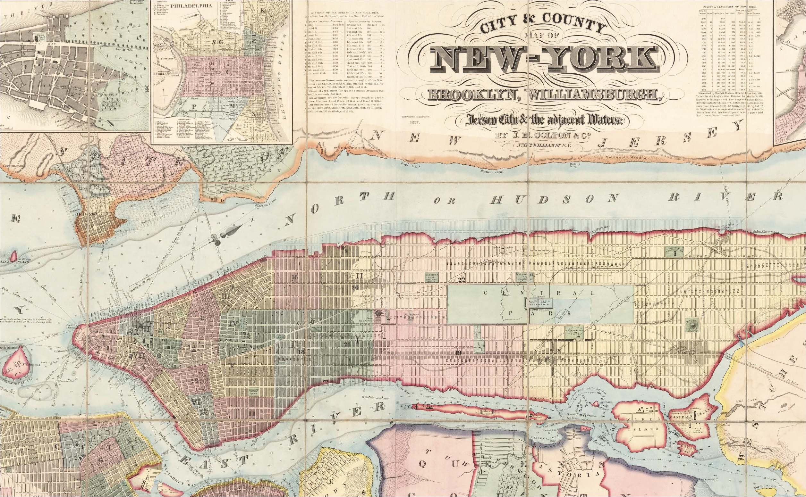

Urban Planning and Design: Syllabus
Columbia University | Pre-College Programs | Urban Planning and Design | Summer 2026

Fillmore, Millard, 1800-1874. | City & county map of New-York : Brooklyn, Williamsburgh, Jersey City & the adjacent waters🗺️️ Course Overview
- Urban Planning and Design | Section 002 | Call Number 10214 | SURBO105
- Class Modality: In-Person | On-Campus
- Class Schedule: Monday–Friday | 11:10 a.m.–1:00 p.m. and 3:10–5:00 p.m. ET
- Class Location: 140 URIS HALL
👤 Faculty Instructor
- Stephen Metts | he/him
- 📧 Email | sm6221@columbia.edu
- Office Hours: Available prior & after class meetings - On-Campus
- Response Policy: Contact via email; daily response window
🗓️ Weekly Class Session
- Monday-Friday (06/29/2026 - 07/17/2026)
- ⏰ 11:10 a.m.–1:00 p.m. and 3:10–5:00 p.m. ET
- 🏛️ Building: URIS HALL
- 🚪 Room: 140
- 📅 Course Calendar
🏙️ Course Description
Making urban areas livable, sustainable, and desirable is a top priority for governmental bodies, economists, business leaders, realtors, and many other key stakeholders. Shaping the way our society operates is a big job, and it’s why urban planning is such a sought-after career. Becoming an urban planner requires a combination of sophisticated skills that includes architecture, engineering, and design. Through this course, students will explore the fundamentals of urban planning, learn how to build effective communities, and discuss the best practices of working with land (including infrastructure, water, and air) to design healthy, happy, and in-demand habitats. Additionally, students will explore how transportation, business districts, and environmental concerns impact development through hands-on experiences, like field trips. By the end of the course, students will have an acumen for discussing history, theory, and pressing social issues that impact both real estate and residents’ quality of life.
Building upon these foundations, the course introduces students to the ways urban designers and planners observe, interpret, and represent cities across multiple scales and perspectives. Through lectures, guided exercises, fieldwork, and applied projects, students will examine urban form, temporal change, and shifting relationships between street-level conditions and larger regional systems. The course emphasizes both qualitative and quantitative approaches, introducing students to mapping, spatial analysis, and data-driven methods used to investigate urban environments. Working individually and collaboratively, students will engage sites both inside and outside the classroom while developing skills in observation, documentation, critical analysis, and visual communication. Students will also examine the growing environmental challenges facing cities, considering how issues such as climate risk, infrastructure, and resource use shape urban life and design decisions. Throughout the term, students will build toward a culminating final project that synthesizes theory and practice, demonstrating their ability to analyze, visualize, and communicate complex urban conditions.
🧩 Themes and Areas of Investigation
Reading the City: Observation and Urban Form
- Students develop the ability to observe and interpret the built environment, analyzing how streets, buildings, and public spaces shape urban experience.
Cities in Time: Growth, Change, and Transformation
- Students examine the temporal dynamics of cities, including patterns of growth, decline, sprawl, and redevelopment.
Scales of Urban Space: From Street to Region
- Students explore how urban systems operate across scales, linking fine-grained, street-level conditions to broader neighborhood, city, and regional patterns.
Data-Driven Urban Analysis
- Students engage directly with real-world spatial, demographic, and planning data, using mapping and analytical tools to investigate urban conditions.
New York City as Laboratory
- Students use New York City as a primary site of study, connecting course concepts to real places through fieldwork, site visits, and applied observation.
Urban Systems and Environmental Challenges
- Students analyze how infrastructure, transportation, and environmental pressures—such as climate risk and resource distribution—shape contemporary cities.
Synthesis: From Analysis to Design Thinking
- Students integrate theory, observation, and data analysis in a culminating final project that demonstrates their ability to analyze, visualize, and communicate complex urban conditions.
✅ Learning Outcomes
By the end of the course, student will be able to:
L1. Describe and explain key concepts in urban design and planning theory, including urban form, spatial organization, and environmental systems.
L2. Interpret and analyze urban environments through direct observation, applying critical frameworks across scales from the street to the region.
L3. Identify and evaluate the temporal dynamics of cities, including processes of growth, decline, sprawl, and redevelopment.
L4. Access, interpret, and utilize spatial and quantitative data sources (e.g., maps, GIS layers, demographic data) to investigate urban conditions.
L5. Assess and explain major environmental challenges facing cities, including climate risk, infrastructure systems, and resource distribution.
L6. Apply field-based research methods —such as site observation, documentation, and comparative analysis—to connect theory with real-world conditions.
L7. Synthesize and communicate theoretical and empirical insights through a culminating project integrating spatial analysis, design thinking, and critical interpretation.
🗓️ Weekly Course Schedule:
| Week | Day | Morning Session (Lecture / Discussion) | Afternoon Session (Workshop / Applied) | Learning Objectives | Themes / Areas of Investigation |
|---|---|---|---|---|---|
| Week 1 | Mon 6/29 | Introduction to Urban Design: Observation and the Derive | Campus Mapping Exercise: Columbia and the Surrounding Neighborhood | L1, L2, L6 | Reading the City; NYC as Laboratory |
| Tue 6/30 | Position, Orientation, and Spatial Perspective | Vantage Point Mapping, Sketching, and Spatial Documentation | L2, L4, L6 | Reading the City; Data-Driven Urban Analysis | |
| Wed 7/1 | Scale and the City: From Street to Region | QGIS + GeoDa Installation and Introductory Spatial Data Workshop | L2, L4 | Scales of Urban Space; Data-Driven Urban Analysis | |
| Thu 7/2 | Cities Through Time: Historical Growth and Urban Transformation | Historical Mapping and Comparative Neighborhood Analysis | L1, L3, L4 | Cities in Time; Data-Driven Urban Analysis | |
| Fri 7/3 | How We Read and Remember Cities | Mental Mapping and Urban Form Workshop | L1, L2, L6 | Reading the City; Scales of Urban Space; NYC as Laboratory |
| Week | Day | Morning Session (Lecture / Discussion) | Afternoon Session (Workshop / Applied) | Learning Objectives | Themes / Areas of Investigation |
|---|---|---|---|---|---|
| Week 2 | Mon 7/6 | Representing the City: Birds-Eye Urbanism | Field Trip 1: Museum of the City of New York – “He Built This City: Joe Macken’s Model” and “New York at Its Core” | L1, L2, L6 | NYC as Laboratory; Reading the City; Scales of Urban Space |
| Tue 7/7 | Density, Land Use, and Urban Growth | Mapping Density, Land Use, and Urban Growth Patterns | L2, L3, L4 | Data-Driven Urban Analysis; Scales of Urban Space | |
| Wed 7/8 | Sustainable Cities, Urban Growth, and Sprawl | Comparative Urban Analysis Using Sustainability Indicators | L3, L4, L5 | Urban Systems and Environmental Challenges | |
| Thu 7/9 | Infrastructure, Climate Risk, and Environmental Urbanism | Environmental Risk Mapping and Image Analysis | L4, L5 | Urban Systems and Environmental Challenges; Data-Driven Urban Analysis | |
| Fri 7/10 | Infrastructure and the Hidden Systems of Cities | Systems Mapping Workshop: Transportation, Utilities, and Water Networks | L2, L5, L6 | Urban Systems; Reading the City |
| Week | Day | Morning Session (Lecture / Discussion) | Afternoon Session (Workshop / Applied) | Learning Objectives | Themes / Areas of Investigation |
|---|---|---|---|---|---|
| Week 3 | Mon 7/13 | Climate Infrastructure and Urban Resilience | Field Trip 2: East Side Coastal Resiliency Project | L2, L5, L6 | Urban Systems and Environmental Challenges; NYC as Laboratory |
| Tue 7/14 | Final Project Introduction and Site Selection | Group Formation, Site Documentation, and Spatial Analysis | L4, L6, L7 | Synthesis; Data-Driven Urban Analysis | |
| Wed 7/15 | Urban Representation and Design Communication | GIS Mapping, Diagramming, and Proposal Development | L4, L7 | Synthesis; Data-Driven Urban Analysis | |
| Thu 7/16 | Critique and Project Refinement | Final Studio Workshop and Presentation Preparation | L6, L7 | Synthesis | |
| Fri 7/17 | Final Project Presentations and Reflection | — | L7 | Synthesis |
📝 Assignments
| Week | Day | Assignment / Deliverable | Homework / Preparation for Next Session |
|---|---|---|---|
| Week 1 | Mon 6/29 | Campus Mapping Exercise: observational map and field notes documenting connections and disconnections between Columbia and the surrounding neighborhood | Assigned reading(s) on urban observation, psychogeography, and the derive |
| Tue 6/30 | Vantage Point Sketch and Spatial Documentation Exercise using latitude/longitude coordinates and observational annotations | Assigned reading(s) on scale, spatial thinking, and urban representation | |
| Wed 7/1 | Introductory Spatial Data Exercise: QGIS and GeoDa setup + basic mapping activity | Assigned reading(s) on historical urban development and city transformation | |
| Thu 7/2 | Historical Mapping Exercise comparing georeferenced imagery and urban change in NYC | Assigned reading(s) and reflection prompts on urban representation and birds-eye perspectives | |
| Fri 7/3 | Mental Map and Urban Form Analysis: hand-drawn mental map, urban form diagram, and short written reflection | Assigned reading(s) and reflection prompts on birds-eye urban representation and cities at multiple scales; prepare materials for Field Trip 1 |
| Week | Day | Assignment / Deliverable | Homework / Preparation for Next Session |
|---|---|---|---|
| Week 2 | Mon 7/6 | Museum Reflection and Comparative Analysis examining birds-eye urban representation and spatial perspective | Assigned reading(s) on density, land use, and urban growth |
| Tue 7/7 | Urban Density and Land Use Mapping Exercise using NYC spatial datasets | Assigned reading(s) on sustainability, urban growth, and suburbanization/sprawl | |
| Wed 7/8 | Comparative Sustainability Analysis using prosperity, sustainability, and growth indicators | Assigned reading(s) on infrastructure, climate risk, and environmental urbanism | |
| Thu 7/9 | Environmental Risk and Spatial Analysis Exercise using GIS layers and urban imagery | Assigned reading(s) on infrastructure systems and hidden urban networks | |
| Fri 7/10 | Urban Systems Diagram identifying interconnected infrastructure and environmental systems | Review weekly materials and begin brainstorming final project topics and sites |
| Week | Day | Assignment / Deliverable | Homework / Preparation for Next Session |
|---|---|---|---|
| Week 3 | Mon 7/13 | Field Trip Documentation and Reflection | Review precedent urban design proposals and prepare preliminary project ideas |
| Tue 7/14 | Final Project Proposal: site, systems lens, and project objective | Continue site documentation and proposal development | |
| Wed 7/15 | Draft Urban Design Board/Deck | Refine proposal and presentation materials | |
| Thu 7/16 | Final Project Board/Deck Submission | Prepare final group presentation | |
| Fri 7/17 | Final Group Presentation | — |
This schedule is subject to change at the discretion of the instructor. “L” designations specified in the course schedule indicate each daily module’s alignment with specific course learning objectives. This alignment includes corresponding daily assignments.
🖊️️️ Required Materials
Students are required to maintain a sketchbook for in-class exercises and fieldwork. You may choose between a smaller, portable sketchbook (approximately 5”×7” to 6”×9”) or a larger-format pad (8.5”×11” or 11”×17”), depending on your working style. A smaller sketchbook is strongly recommended for students who prioritize mobility and frequent field use, as it is easy to carry and ideal for quick observational sketches during site visits and travel. A larger format is well-suited for students who prefer more expansive drawings, diagrams, and composed layouts, particularly for in-class work or more developed studies, though it may be less practical to carry regularly in the field.
Sketchbooks should have at least as medium-weight paper (at least ~100 gsm) suitable for ink. A harder surface such as the Strathmore 300 or 400 Series Bristol Smooth works very well with Sakura Pigma Micron Pens and Staedtler Pigment Liner Pens - both highly recommended drawing instruments. Similar pen styles like the Copic Multiliner Pens and artPOP! Fineliner Black Pens work well and are very similar to the Micron and Staedtler pens. Regardless the specific brand, having an assorted set of several tip sizes is highly recommended so as to allow different sketching approaches within a single sketch/drawing.
Along with Sketchbook(s) and a pen set, choose a lightweight ruler in either 6” or 12” length - something like the Helix Shatter Resistant Ruler to aid in developing linear details like building edges, rooflines, and street walls within a sketch.
No prior drawing experience is required for this course. Urban sketching will be introduced as a practical tool for observation, analysis, and communication rather than as a measure of artistic skill.
💻 Software and Data Access
Early in the course, the instructor will guide students through downloading and installing the primary spatial software used in the class on their personal laptops (macOS or Windows). These tools will be used throughout the term to access, visualize, and analyze spatial and demographic data integral to urban design and analytics. The course will utilize the Long Term Release (LTR) of QGIS, a widely used open-source Geographic Information System, along with GeoDa, a platform for spatial data exploration and analysis.
No prior experience with these tools is required. Step-by-step installation guidance and introductory instruction will be provided during the first few days of the course. Further, all datasets used during the course will be provided for easy download and installation on a daily, excercise-by-exercise basis.
📚 Course Readings
All required readings for the course will be provided in digital PDF format and made easily accessible through posted assignments at Canvas. There is no need to purchase stand-alone textbook(s) for this course.
Readings will include a combination of excerpts from foundational texts, contemporary essays, and applied case studies that support daily topics and in-class discussions. Students are expected to complete assigned readings in advance of each day’s session and engage critically with the material as part of class activities and discussions.
🧭 Participation, Engagement, and Attendance
Students are expected to attend every class session. This includes arriving on time and leaving only when dismissed. Class attendance is mandatory and is closely monitored. Missing class means missing an experience, an important learning moment that yields your success on an activity/assessment, and the class learning from your valuable contribution. If you need to miss class for an illness or another emergency situation, please contact your instructor before the class session. More than one absence will affect your ability to receive a program Certification of Participation. A student who misses multiple class sessions may not receive a Certificate of Participation even if those absences are excused.
If you fall ill during a class session, please return to class to inform the instructor. The instructor will assess the situation and detail next steps. A student is not permitted to leave and/or return to a residence without the instructor’s knowledge.
Please note that disruptive behavior of any kind will not be tolerated.
⏰ Late Work
All assignments should be submitted by the due date noted in the course syllabus. Late submissions require advance notice and permission from the instructor.
📊 Evaluation and Grading
Students are expected to complete all work to the best of their ability. This means applying readings, lectures, and activities to assignments and following assignment directions carefully. For all completed assignments, students should expect meaningful and specific feedback before the start of the succeeding week that will assist in future coursework, education, or career opportunities.
While there are no final grades for Pre-College coursework, students receive an official Columbia University Certification of Participation and written evaluations from their instructors. Students are evaluated on the basis of the effort they put in, their progress over the duration of the class, and their potential for future work in the pertinent field and in college.
🏁 Course Completion
Successful completion of your Pre-College course is determined by the instructor in consultation with program administration. Attendance, class participation, satisfactory completion of assignments and adherence to the program’s community standards are all considered as part of the evaluation process.
📖 Citation and Submission
For this course, all written assignments must cite sources using the Chicago Manual of Style (author-date or notes and bibliography formats are both acceptable) and be submitted via Canvas. Plagiarism, whether intentional or unintentional, will result in dismissal from the program.
AI generative or machine learning tools can be used to assist with course deliverables, provided that all utilized information is cited in accordance with program guidelines. In addition, note that information produced by AI generative tools may be inaccurate or outdated. Please consult with the instructor on best AI practices and where they can be most helpful and relevant to assignment and project deliverables.
🤝 Student Resources
Columbia University Information Technology
Columbia University Information Technology(CUIT) provides Columbia University students, faculty, and staff with central computing and communications services. Students, faculty, and staff may access University-provided discounted software downloads.
Columbia University Library
Columbia’s extensive library system ranks in the top five academic libraries in the nation, with many of its services and resources available online.
Program Resources
If you do not understand the course content or the instructor’s expectations, please either ask during class or contact the instructor and/or facilitator outside of class times via Canvas DM or email. You are encouraged to visit designated office hours with both the instructor and facilitator as needed.
For other program and wellness-related needs, contact the Pre-College Program office at hsp-office@columbia.edu or (212) 634-2799.
🏛 School and Program Policies
Copyright Policy
Please note—Due to copyright restrictions, online access to this material is limited to instructors and students currently registered for this course. Please be advised that by clicking the link to the electronic materials in this course, you have read and accept the following:
The copyright law of the United States (Title 17, United States Code) governs the making of photocopies or other reproductions of copyrighted materials. Under certain conditions specified in the law, libraries and archives are authorized to furnish a photocopy or other reproduction. One of these specified conditions is that the photocopy or reproduction is not to be “used for any purpose other than private study, scholarship, or research.” If a user makes a request for, or later uses, a photocopy or reproduction for purposes in excess of “fair use,” that user may be liable for copyright infringement.
Academic Integrity
Columbia University takes matters of intellectual integrity very seriously. Plagiarism is not tolerated. Plagiarism includes, but is not limited to, submitting work done by another person or purchased from any source; failure to document ideas found in sources, whether print or electronic, with appropriate notes and bibliographical references; failure to enclose borrowed phrases or sentences within quotation marks; and turning in the same assignment for two courses without advance permission from both teachers.
Plagiarism, whether intentional or unintentional, will result in dismissal from the program. Students who are unsure about the proper presentation of their work should consult their course instructor.
Community Standards
The Community Standards are designed to ensure the safety and well-being of the students and the integrity of the University. They are strictly enforced and failure to abide by them results in dismissal from the program, normally on the first offense. The determination as to whether a student has violated the Community Standards is made by program staff, instructors, and administrators.
Students who are dismissed from the program do not receive evaluation letters or Certifications of Participation. No portion of the program cost will be refunded to a student who has been dismissed.
Protection of Minors at Columbia
Columbia University is committed to promoting a safe environment for minors who participate in our programs and activities. You can read the University’s policy and access other helpful resources on the University’s website on protection of minors.
Discrimination, Harassment or Gender-based Misconduct
Columbia University is committed to fostering an environment that is free from gender-based discrimination and harassment, including sexual assault and all other forms of gender-based misconduct. The University recognizes its responsibility to increase awareness of such misconduct, prevent its occurrence, diligently investigate reports of misconduct, support students and others who experience gender-based misconduct, and respond fairly and firmly when students violate University policy. The University is also committed to supporting students accused of gender-based misconduct who go through the disciplinary process. In addressing issues of gender-based misconduct, all members of the University must respect and care for one another in a manner consistent with our deeply held academic and community values.
Please review the Program’s Discrimination, Harassment or Gender-Based Misconduct policy.
Accessibility
Columbia is committed to providing equal access to qualified students with documented disabilities. A student’s disability status and reasonable accommodations are individually determined based upon disability documentation and related information gathered through the intake process. For more information regarding this service, please visit the University’s Health Services website.